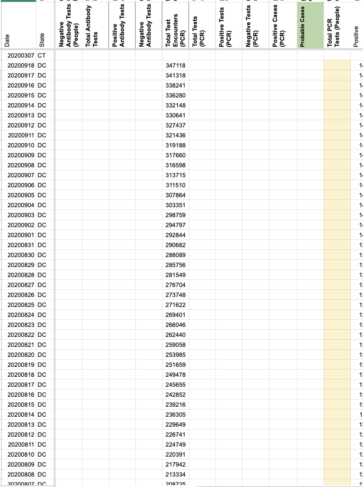
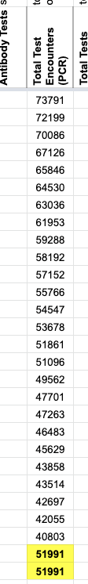
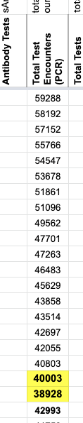
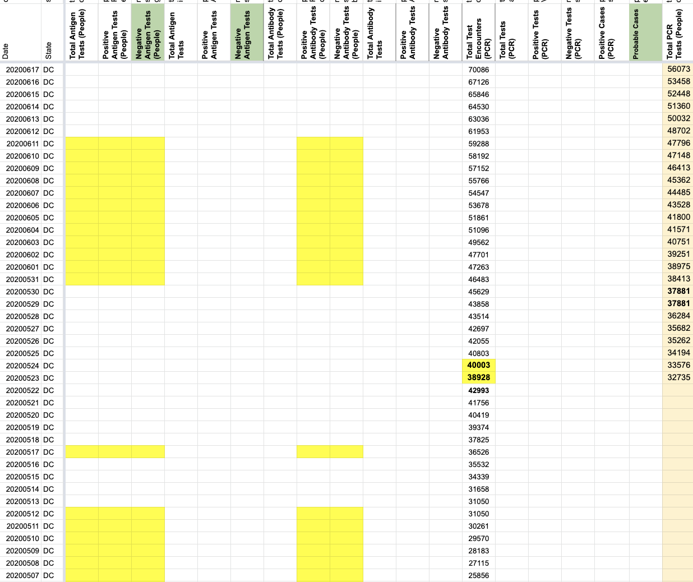
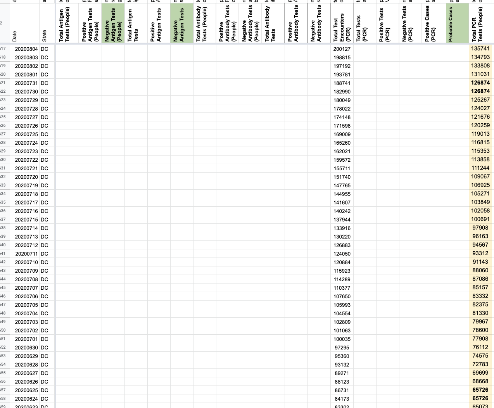
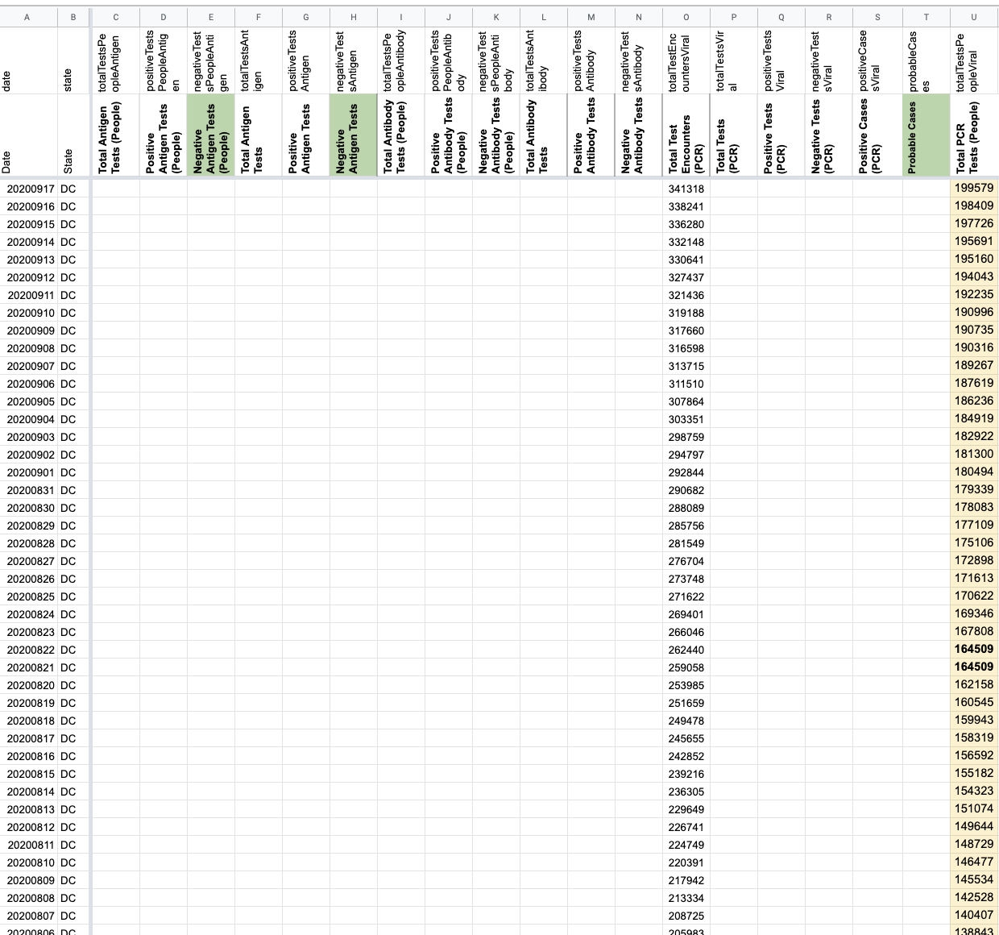

[DC] Backfill total people tested once TotalTestResults is switched
Issue number 831
karaschechtman opened this issue on September 14, 2020 at 4:20 pm
Labels Data quality not stale
State or US: DC
Describe the problem DC’s “Total Number of DC Residents Tested” represents people according to our outreach. Once totalTestResults is switched in the API for DC, fill DC’s people timeseries from that field
Link to data source https://coronavirus.dc.gov/data each day listed here
I also patched 5/23 and 5/24 for total test encounters the day the timeseries became available to reflect revisions because it looks like we patched with the wrong values.
The drop on 5/23 was due to a review of data https://coronavirus.dc.gov/release/coronavirus-data-may-23-2020
Before  
After    